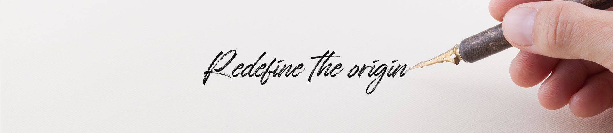

유한건강생활은 천연물의 가치를 재발견하고
연구기술을 확보하는데 집중합니다.
-
Redefine The Origin오리진을 다시 쓰다
먹거리와 바를거리의 본질을 찾아, 자연에서 답을 찾고
과학으로 증명해 헬스&라이프스타일 솔루션을 제공합니다.우리가 먹고 마시고 바르는 모든 선택이 가족과 환경에
올바른 선택이 될 수 있도록 삶의 새로운 선택 기준을 제안합니다. -
Mission천연물 연구를 기반으로
고객의 삶에 가치 있는 경험과
바른 선택을 위한 솔루션을 제공합니다.Vision글로벌 NO.1
천연물 연구 & 브랜딩 전문 기업CORE VALUE- Stewardship청지기
- Communication소통
- Sustainability지속가능성
- Challenge도전
우리(유한건강생활)는 청지기 정신 아래 사회에 도움이 되고
고객의 삶이 건강해질 수 있도록 비즈니스를 영위합니다.동시에 우리가 살아가고 있는 지구와 환경에게 미치는 영향까지도 이로울 수 있도록 고민하는 등
비즈니스를 지속가능 하게 이끌어가기 위한 새로운 도전을 마다하지 않습니다. -
유한건강생활은 고(故) 유일한 박사의 고귀한 기업가 정신을 바탕으로
성장한 국내 1위 제약사 유한양행으로부터 시작했습니다.우리는 국민들의 삶이 더욱 윤택하고 건강해질 수 있도록 안전하고 질 좋은 제품을 개발해 ‘온 국민이 믿고 구매할 수 있는 1등 라이프스타일 솔루션 회사’로 자리매김하기 위해 노력해오고 있습니다.
2019년, 여성 이너 뷰티 전문 브랜드 '이너플로라'와 백수오를 활용한 여성 갱년기 전문 브랜드 '에스트리션'을 성공적으로 선보이고
프리미엄 유제품 '뉴오리진 a2 분유와 우유'를 국내 최초로 시장에 소개하는 등 Health and Life style 브랜드로서의 입지를 공고히 하고 있습니다.더불어, 2024년에는 녹용 원료로는 국내 최초로 식약처로부터 면역기능 소재로 허가받은 녹용효소분해 헨키브의 제품화를 통해 국민들의 건강을 증진시키기 위한 노력을 이어갈 예정입니다.
유한건강생활은 사회적 책임을 다하고 여러 이해관계자와 공감하며 정직하고 올바른 방향으로 기업의 역할을 수행하기 위한 정도경영을 추구합니다. 앞으로도 더 많은 고객들이 건강하고 행복한 삶을 경험할 수 있도록 임직원 모두가 의미 있는 역할을 다할 것을 약속드립니다. 하루하루 새롭게 성장하는 유한건강생활의 모습을 기대해 주시기 바랍니다.유한건강생활 대표이사 손 정 수유한건강생활은 고(故) 유일한 박사의
고귀한 기업가 정신을 바탕으로
성장한 국내 1위 제약사
유한양행으로부터 시작했습니다.우리는 국민들의 삶이 더욱 윤택하고 건강해질 수 있도록 안전하고 질 좋은 제품을 개발해 ‘온 국민이 믿고 구매할 수 있는 1등 라이프스타일 솔루션 회사’로 자리매김하기 위해 노력해오고 있습니다.
2019년, 여성 이너 뷰티 전문 브랜드 '이너플로라'와 백수오를 활용한 여성 갱년기 전문 브랜드 '에스트리션'을 성공적으로 선보이고 프리미엄 유제품 '뉴오리진 a2 분유와 우유'를 국내 최초로 시장에 소개하는 등 Health and Life style 브랜드로서의 입지를 공고히 하고 있습니다.
더불어, 2024년에는 녹용 원료로는 국내 최초로 식약처로부터 면역기능 소재로 허가받은 녹용효소분해 헨키브의 제품화를 통해 국민들의 건강을 증진시키기 위한 노력을 이어갈 예정입니다.
유한건강생활은 사회적 책임을 다하고 여러 이해관계자와 공감하며 정직하고 올바른 방향으로 기업의 역할을 수행하기 위한 정도경영을 추구합니다. 앞으로도 더 많은 고객들이 건강하고 행복한 삶을 경험할 수 있도록 임직원 모두가 의미 있는 역할을 다할 것을 약속드립니다.
하루하루 새롭게 성장하는 유한건강생활의 모습을 기대해 주시기 바랍니다.유한건강생활 대표이사 손 정 수